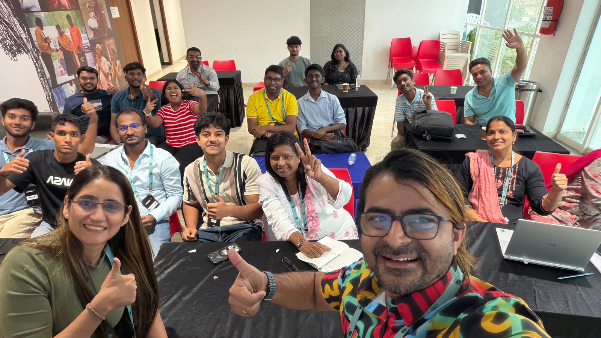
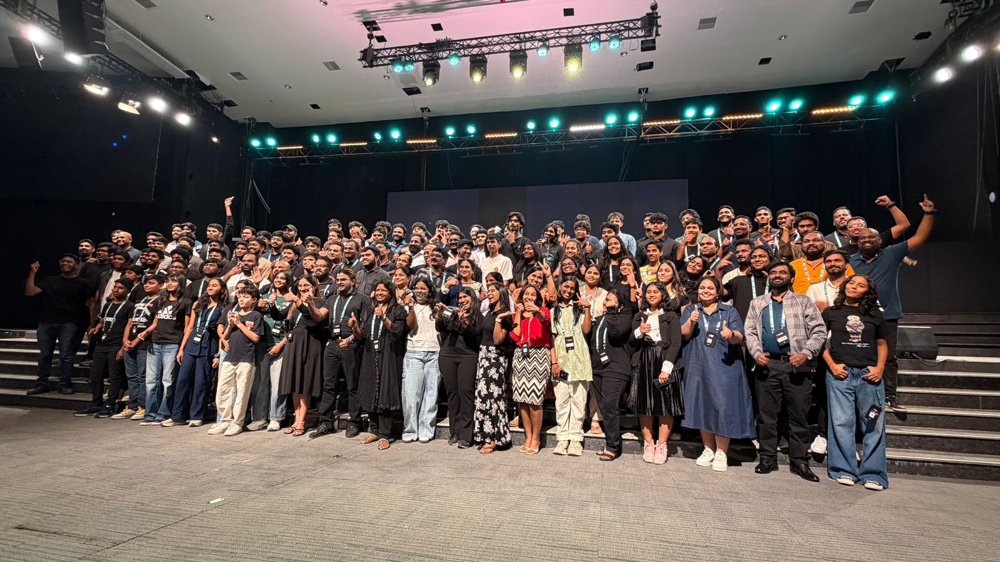

Baby Dedication App & Broadcast Room
Building a real-world web app for NLAG church and visiting the broadcast room to see how live services are streamed.
Overview
Today I have worked on building a real-world web application for NLAG church. The sir has again divided us into three groups, and each group was assigned a specific task.
Our task was to create a baby dedication registration web app. We started with detailed planning, where we discussed the structure, required fields, and how the user interaction should flow. After that, we moved into coding and testing the application to ensure it worked properly.
Later, we visited the broadcast room and observed how the church service is streamed live. This gave me a practical understanding of how the technical setup works behind the scenes during a live service.
What I Learned
- How to plan and structure a real-world registration form application from scratch.
- How to define required fields, user interaction flow, and form validation for a church-specific use case.
- How to work as a team, divide responsibilities, and bring a functional web app to completion.
- How a church broadcast room is set up technically — including cameras, mixers, and streaming software.
- How the technical setup works behind the scenes to keep a live church service running smoothly.
What I Did
- Was assigned to a group and tasked with building a baby dedication registration web application.
- Did detailed planning — discussed the structure, required fields, and user interaction flow.
- Coded and tested the application to ensure it worked as intended.
- Deployed the final app, which is live and accessible here: nlag-baby-dedication-form.vercel.app
- Visited the church broadcast room and observed the live streaming technical setup in action.
Photos from Day 5

